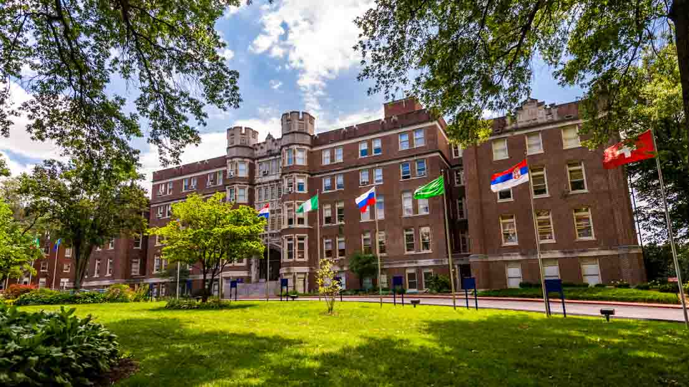

Welcome to Webster Blog!
Founded in 1915, Webster is an independent nonprofit university with students studying at campus locations in North America, Europe and Asia, and in a robust online learning environment. With its main campus in St. Louis, Missouri, USA, Webster University’s network of faculty, staff, students and alumni forge powerful bonds with each other and their communities around the globe. The University is committed to engaged learning experiences and empowering our students to become catalysts for change. This blog will show off some of the things that make Webster University great!

You'll Fit In Here!
With more than 100 student clubs and organizations, ranging from academic to athletic or special interest, and fun activities and events planned throughout the year, there is something for everyone.
Meet new people, attend events and enjoy your hobbies — or discover a new one! At Webster, you have the ability to customize your student life experience to correspond to your unique self,
allowing you to be the best you possible. As one student puts it:
"We have so much to offer for anyone, and even if you don’t feel like we have something for you, then you can create anything you want."
Aaron Kayser
BA in Film, Television and Video Production, ’26
From the Webster University Student Life Page